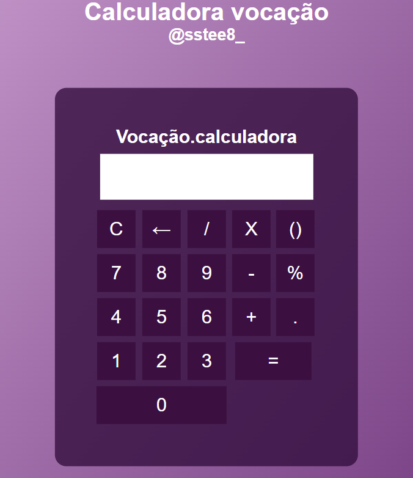

@ - Hangman Game
Desenvolver código limpo (Clean Code) é essencial para criar aplicações JavaScript legíveis, escaláveis e fáceis de manter. Seguir boas práticas como organização, nomenclatura clara, uso de funções bem definidas e eliminação de redundâncias não apenas melhora a qualidade do código, mas também facilita a colaboração em equipe e a evolução do projeto. A modulação é um dos pilares para alcançar um código limpo. Em JavaScript, isso significa dividir seu projeto em arquivos e módulos menores, cada um com responsabilidades específicas. Utilizando recursos como o ECMAScript Modules (ESM), você pode importar e exportar funções, classes ou objetos, mantendo o código organizado e reutilizável. Essa abordagem evita dependências desnecessárias e torna o fluxo de trabalho mais eficiente. Aplicar clean code e modulação é investir na qualidade do seu projeto, garantindo que ele seja robusto hoje e fácil de evoluir no futuro.
@__menotuca - Controle de Multa
O projeto de um Controle de Velocidade em JavaScript é uma excelente forma de explorar a interatividade dinâmica e o controle de elementos visuais! Este desafio combina a manipulação de propriedades de tempo com a programação prática, oferecendo uma oportunidade única para solidificar conceitos importantes do desenvolvimento web. Neste projeto, você construirá uma interface onde o usuário poderá ajustar a velocidade de execução de uma animação, de um player de mídia ou de qualquer outro elemento dinâmico. Isso pode incluir desde acelerar ou desacelerar um vídeo até controlar a cadência de uma simulação visual.
@ - Expanding Cards - Playlist Music
Desenvolver código limpo (Clean Code) é essencial para criar aplicações JavaScript legíveis, escaláveis e fáceis de manter. Seguir boas práticas como organização, nomenclatura clara, uso de funções bem definidas e eliminação de redundâncias não apenas melhora a qualidade do código, mas também facilita a colaboração em equipe e a evolução do projeto. A modulação é um dos pilares para alcançar um código limpo. Em JavaScript, isso significa dividir seu projeto em arquivos e módulos menores, cada um com responsabilidades específicas. Utilizando recursos como o ECMAScript Modules (ESM), você pode importar e exportar funções, classes ou objetos, mantendo o código organizado e reutilizável. Essa abordagem evita dependências desnecessárias e torna o fluxo de trabalho mais eficiente. Aplicar clean code e modulação é investir na qualidade do seu projeto, garantindo que ele seja robusto hoje e fácil de evoluir no futuro.
@sstee8_ - Calculadora
O projeto de uma Calculadora Simples é a porta de entrada ideal para quem está começando a criar aplicações interativas com JavaScript! Este desafio não apenas combina a lógica matemática com a programação prática, mas também oferece uma oportunidade fantástica para consolidar os conceitos mais importantes do desenvolvimento web. Nesse projeto, você construirá uma ferramenta funcional onde o usuário pode realizar operações aritméticas básicas (adição, subtração, multiplicação e divisão), vendo os resultados de forma instantânea.
@_wszin.777 - Hangman Game
Em parceria com a Yasmin Toledo . O clássico jogo da Forca ganha uma roupagem moderna e empolgante com Hangman Adventures, um projeto totalmente desenvolvido em JavaScript! Esta iniciativa une a diversão de decifrar palavras com o aprendizado prático de programação, oferecendo uma experiência gratificante para quem busca aprimorar suas habilidades. Em Hangman Adventures, o jogador é desafiado a descobrir uma palavra secreta, letra por letra, antes que o desenho do enforcado seja concluído. A dinâmica do jogo envolve a manipulação do DOM para exibir o progresso, o gerenciamento de arrays para controlar as letras já tentadas e as corretas, e a captura de eventos do teclado para a interação do usuário.
@__toledo.y_ - Hangman Game
O clássico jogo da Forca ganha uma nova versão interativa e desafiadora com Hangman Adventures, desenvolvido inteiramente em JavaScript! Este projeto combina programação criativa com a emoção de desvendar palavras, proporcionando aprendizado e diversão ao mesmo tempo. Em Hangman Adventures, o jogador precisa adivinhar uma palavra secreta letra por letra, antes que a figura do enforcado seja completada. A lógica por trás do jogo inclui a manipulação de DOM para atualizar a interface, o uso de arrays para gerenciar as letras já tentadas e as letras corretas, e a implementação de eventos do teclado para que o jogador insira suas tentativas.